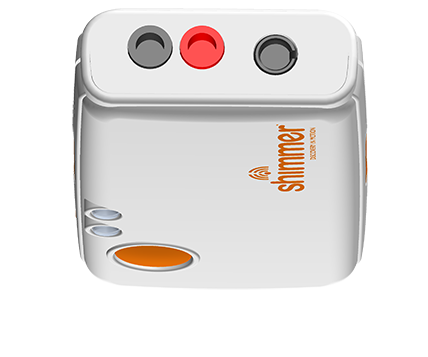
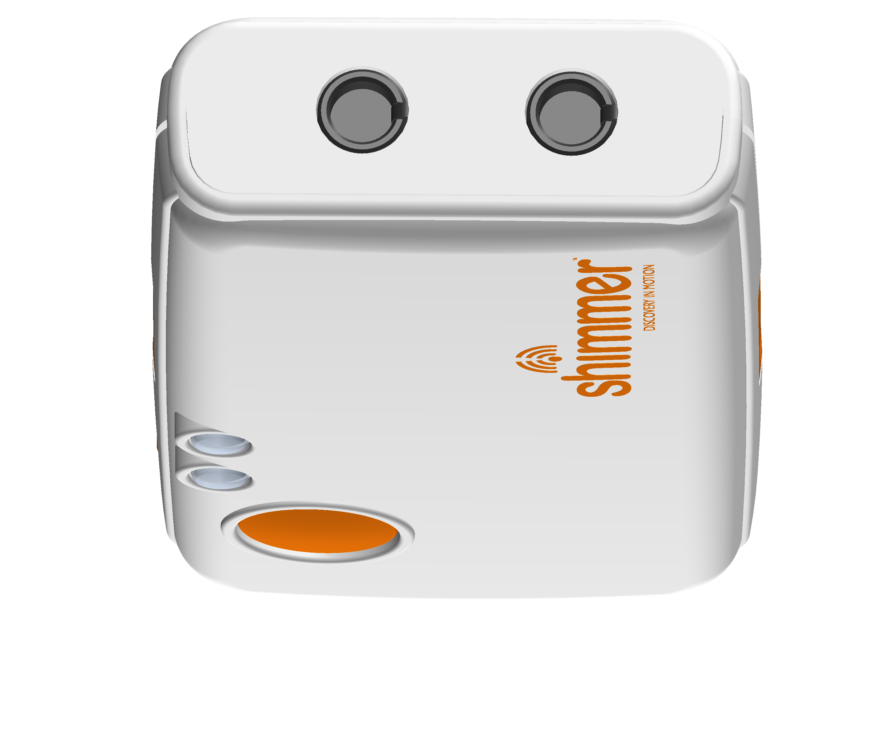

Welcome
This app visualizes a PPG waveform from a Shimmer3R GSR+/Proto3 and estimates heart rate (demo only).
- Scan & Inquiry: Tap 🔍 Scan then ⚙️ Configure.
- Start streaming: Tap 📡 Start Streaming to view live data.
- Watch: Enjoy the embedded video while monitoring your signal.
- Live chart: See the PPG waveform update in real time.
Requirements
- Device: Shimmer3R GSR+ / Proto3
- Firmware: Version ≥
v1.0.22


Device
No device selected
Not validated
Heart rate estimation here is for demonstration only and has not been validated.